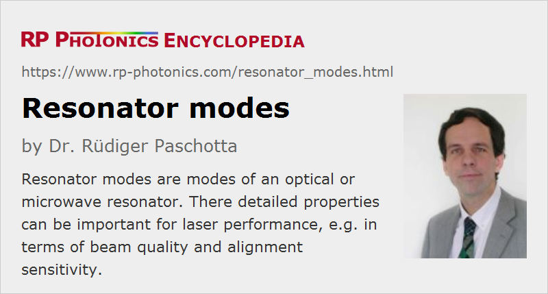

Resonator Modes
Definition: modes of an optical or microwave resonator
More general terms: modes
German: Resonatormoden
Categories: general optics, physical foundations
How to cite the article; suggest additional literature
Author: Dr. Rüdiger Paschotta
Resonator modes are the modes of an optical resonator (cavity), i.e. field distributions which reproduce themselves (apart from a possible loss of power) after one round trip. They can exist whether or not the resonator is geometrically stable, but the mode properties of unstable resonators are fairly complicated. In the following, only modes of stable resonators are considered.
TEMnm Modes, Axial and Higher-order Modes
In the simplest case of a resonator containing only parabolic mirrors and optically homogeneous media, the resonator modes (cavity modes) are Hermite–Gaussian modes. The simplest of those are the Gaussian modes, where the field distribution is defined by a Gaussian function (→ Gaussian beams). The evolution of the beam radius and the radius of curvature of the wavefronts is determined by the details of the resonator. As an example, Figures 1 and 2 show the Gaussian resonator modes for two versions of a simple resonator with a plane mirror, a laser crystal, and a curved end mirror. For a more strongly curved end mirror (Figure 2), the mode radius on the left mirror becomes smaller.


In addition to the Gaussian modes, a resonator also has higher-order modes with more complicated intensity distributions. At a beam waist, the electric field distribution can be written as a product of two Hermite polynomials with orders n and m (non-negative integers, corresponding to x and y directions) and two Gaussian functions. (We still assume a simple resonator with only parabolic mirrors and optically homogeneous media.) These modes are also called TEMnm modes; the article on higher-order modes describes the exact mathematical form. The optical intensity distribution of such a mode (Figure 1) has n nodes in the horizontal direction and m nodes in the vertical direction (Figure 3).
For an optical resonance, the amplitude distribution not only has to maintain its shape after one round trip, but also to experience a phase shift which is an integer multiple of 2π. This is possible only for certain optical frequencies. Therefore, the modes are characterized by a set of three indices: the transverse mode indices n and m, plus an axial mode number q. Increasing q by one corresponds to an increase in the round-trip phase shift by 2π. A notation such as TEMnmq includes the axial mode number in cases where it is important. Modes with n = m = 0 are called axial modes (or fundamental modes, Gaussian modes), whereas all other are called higher-order modes or higher-order transverse modes. Note that due to the Gouy phase shift the optical frequencies depend not only on the axial mode number, but also on the transverse mode indices n and m (see Figure 4):
where Δν is the free spectral range (axial mode spacing) and δν the transverse mode spacing. The latter can be calculated as
where φG is the Gouy phase shift per round trip. The magnitude of that Gouy phase depends on the resonator design.
Due to chromatic dispersion and diffraction effects, the mode spacings actually have a (weak) frequency dependence, which, however, is often not of interest.
Resonant enhancement, e.g. of an incident light wave, hitting a partially transmissive mirror of a resonator from outside, is possible within a range of optical frequencies. The width of that range is called the resonator bandwidth, and this quantity is determined by the rate of optical power losses.
For certain values of the Gouy phase shift, mode frequency degeneracies can occur. In a laser, these can lead to a strong deterioration of beam quality by resonant coupling of the axial modes to higher-order modes. With proper resonator design, it is possible to avoid at least the particularly sensitive frequency degeneracies and thus to improve laser beam quality [3]. Such degeneracies also can have useful properties; e.g. when a Fabry–Pérot interferometer is used as an optical spectrum analyzer, precise adjustment of the mirrors (e.g. in a confocal configuration) allows the use without mode matching. Also, degenerate cavities can be used for Herriot-type multipass cells, which can be used e.g. for strongly increasing the round-trip path length in a laser resonator without changing the overall resonator design.
Laser oscillation usually occurs with one or several frequencies which correspond fairly precisely to certain mode frequencies. However, frequency-dependent gain can cause some frequency pulling (slightly nonresonant oscillation), and the mode frequencies themselves can be influenced e.g. by thermal lensing in the gain medium.
Superposition of Modes
In laser physics, it is usually convenient to describe the radiation within a resonator as a superposition of light in one or several resonator modes. Some examples:
- Single-frequency operation of a laser means that only a single resonator mode (nearly always a Gaussian one) is excited; this leads to a much lower emission bandwidth than in cases where multiple resonator modes are excited.
- Pulse generation with mode locking can also be explained in terms of resonator modes; in that case, several or even many fundamental modes are simultaneously excited, with a fixed (“locked”) phase relationship of the corresponding fields. Under such conditions, a periodic pulse train is emitted by the laser.
- When a laser has a poor beam quality, this is usually (although not always) the result of the excitation of higher-order transverse cavity modes.
Note that it is important to distinguish coherent and incoherent mode superpositions, which can have very different properties.
If different modes of a laser resonator are simultaneously excited, there is usually the phenomenon of mode competition.
Subtle Properties of the Modes of Laser Resonators
Modes of laser resonator can differ significantly from those of an empty resonator, because they are subject to transversely varying gain and loss. This not only results in some deformation of the spatial shape; it is also that the resonator modes are no longer mutually orthogonal. Instead, there is a set of adjoint modes, related to the actual resonator modes by some biorthogonality relations. This biorthogonal (non-normal) nature has a number of peculiar implications. For example, the total power circulating in the laser is no longer simply the sum of the powers propagating in the different modes. There are also effects on the laser noise.
Questions and Comments from Users
Here you can submit questions and comments. As far as they get accepted by the author, they will appear above this paragraph together with the author’s answer. The author will decide on acceptance based on certain criteria. Essentially, the issue must be of sufficiently broad interest.
Please do not enter personal data here; we would otherwise delete it soon. (See also our privacy declaration.) If you wish to receive personal feedback or consultancy from the author, please contact him e.g. via e-mail.
By submitting the information, you give your consent to the potential publication of your inputs on our website according to our rules. (If you later retract your consent, we will delete those inputs.) As your inputs are first reviewed by the author, they may be published with some delay.
Bibliography
| [1] | A. G. Fox and T. Li. “Resonant modes in a maser interferometer”, Bell Syst. Tech. J. 40, 453 (1961), doi:10.1002/j.1538-7305.1961.tb01625.x |
| [2] | A. G. Fox and T. Li, “Computation of optical resonator modes by the method of resonance excitation”, IEEE J. Quantum Electron. 4 (7), 460 (1968), doi:10.1109/JQE.1968.1075368 |
| [3] | R. Paschotta, “Beam quality deterioration of lasers caused by intracavity beam distortions”, Opt. Express 14 (13), 6069 (2006), doi:10.1364/OE.14.006069 |
| [4] | A. E. Siegman, Lasers, University Science Books, Mill Valley, CA (1986) |
See also: cavities, modes, mode competition, free spectral range, finesse, single-frequency operation, mode hopping, mode locking, beam quality, resonator design
and other articles in the categories general optics, physical foundations
|  |
If you like this page, please share the link with your friends and colleagues, e.g. via social media:
These sharing buttons are implemented in a privacy-friendly way!